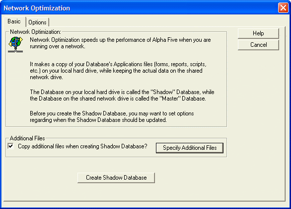
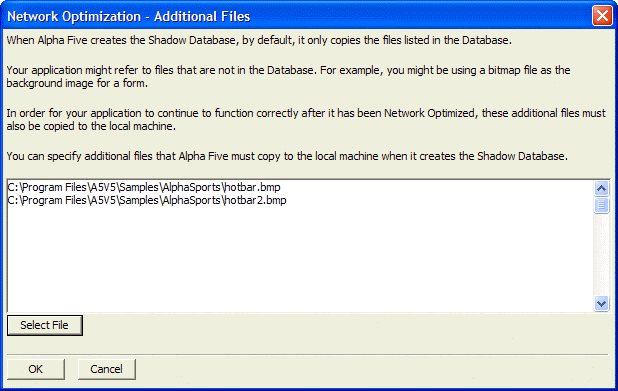
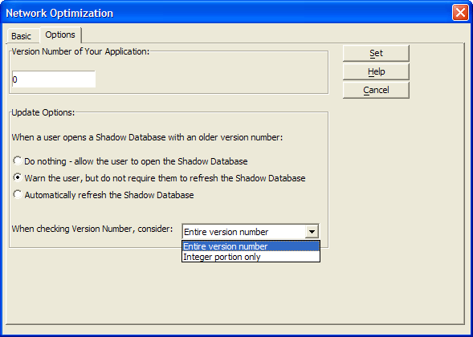

Network Optimization
How Network Optimization Works
Network Optimization works by making a local copy on your hard drive of certain of your database application files (such as forms, reports, field rules etc.). When you run the application, Alpha Five accesses these files from your local hard drive, but continues to access the database records from the shared network hard drive. This results in less network traffic, and better performance.
The database on your local hard drive is called the Shadow Database. The database on the shared network drive is called the Master Database.
Files Copied by Network Optimization
Network Optimization copies the database container (the .adb, .alb, .alm, and .alx files) and the data dictionaries (the .ddd, .ddm and .ddx files) to your local hard drive. The Network Optimization process also makes shadow tables on your local hard drive. These shadow tables point to the actual database tables that are on the network. Shadow tables are indicated in the Control Panel by a shadow behind the table icon .
 Note : Alpha Five
Custom help files are
not automatically copied by Network Optimization. You must specify them as
additional files.
Note : Alpha Five
Custom help files are
not automatically copied by Network Optimization. You must specify them as
additional files.
Alpha Five allows you to set rules that automatically refresh the Shadow Database when the Master Database has been updated.
You can set the version number of the master database. Then, when a user opens a shadow database that is based on an earlier version of the master database, Alpha Five can warn the user that the shadow database is out of date. Alpha Five can then automatically refresh the shadow database, or allow the user to optionally refresh the shadow database.
Configuring Network Optimization
Install the Alpha Five application on your server.
Make sure you can access the server from your workstations. (This sounds obvious it's amazing how many times this is an issue.)
Load the Alpha Five runtime or full version (whichever you plan to use) on your workstations.
Start Alpha Five on your workstation.
From the Alpha Five menu select File > Open Database... and navigate to your application on the server and open it. (Allow additional time for it to open over your network. I've seen this take almost 5 minutes on some real slow networks.)
Select Tools > Network Optimize... to display the Network Optimization dialog.

On the Basic tab, optionally click Specify Additional Files to specify other files such as image or help files that are part of your database. For example, a form in your application might use a bitmap file as a background image. If this image is not part of the database (i.e. does not show up in any of the tabs on the Control Panel ), then you need to specify it on the Additional Files dialog.
Click Select.
Navigate to and select the file.
Click Open.
Repeat steps 7a to 7c for each additional file to include.
Click OK to continue or Cancel to discard your inputs.

Click Create Shadow Database to create a Shadow Database.
On the Options tab, assign an initial version number to the Master Database. You will increment this number each time you want to enable a database refresh.
Specify rules for refreshing the Shadow Database when it does not match the Master database. When a user opens a Shadow Database, Alpha Five automatically checks the version number associated with the Shadow Database and compares it with the Master Database's current version number. If the Shadow Database is out of date, Alpha Five can warn the user, or it can automatically refresh the Shadow Database, depending on the rule you set. The options are:
Do nothing - allow the user to open the Shadow Database
Warn the user, but not require them to refresh the Shadow Database - Alpha Five will display a dialog when the user opens an out-of-date shadow database, but will allow the user to proceed without first refreshing the shadow database.
Automatically refresh the Shadow Database - Alpha Five will automatically update the shadow database if it is out-of-date.
Make a selection from When checking Version Number. By selecting the "Integer Portion Only" option, you can make incremental changes on the master copy of the database without forcing the shadow database to be updated. You can keep track of these incremental changes by assigning fractional version numbers. E.g. version 1.1, 1.2, 1.3 etc. Only when the integer portion of the version number is changed (e.g. from 1.3 to 2.0) will the shadow database be refreshed. See also A5_SetAppVersionNumber() and A5_GetAppVersionNumber(). The options are:
Entire version number
Integer portion only
Click Set to apply.

Wait for the optimize to complete. After it has completed and the application reloads, you can shut it down and set up your desktop icon. (You can also set it up ahead of time if you wish but the folders may not exist yet.). The icon should be formatted like this:
|
|
To refresh a Network Optimized database (i.e. a "Shadow Database"):
Open the local (shadow) database.
Select Tools > Refresh Shadow. The command will refresh the current database if it is a Shadow Database, otherwise no action will occur. When new tables are added to the Master Database after the Shadow Database had been created, the new tables will be added to the Shadow Database.
After You Create the Shadow Database
Whenever you want to run the application in the future, use the local copy of the application.
When you are using a local copy of an application, you cannot edit table structures, or field rules. However, you can add new layouts, or edit existing layouts. Keep in mind, that these edits are local. Other users of the application on the network will not see these edits. Also, remember that when you refresh the local copy of the database, your local edits will be lost. If you want to make a change to your application, after users have made local copies, you must make your changes to the master copy, and then each user must refresh their local copy. After a local copy has been refreshed, any local changes (such as edits to scripts) that you made will be overwritten.
 Note : Packing or updating
the indexes of a table in a shadow database actually performs the operation
on the master table.
Note : Packing or updating
the indexes of a table in a shadow database actually performs the operation
on the master table.
See Also